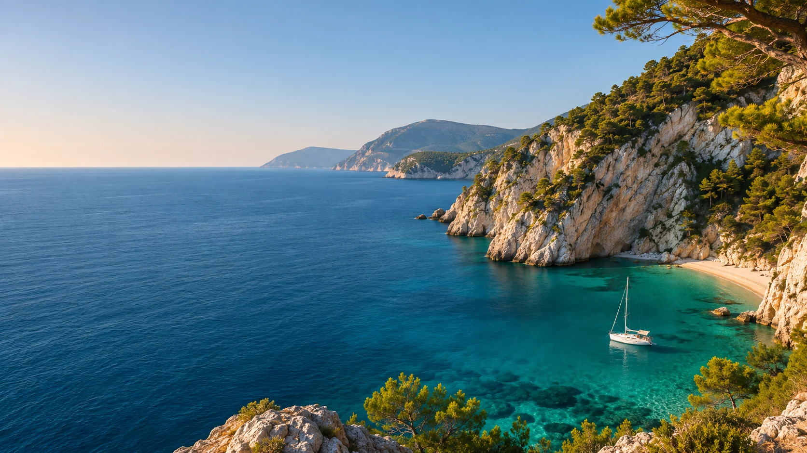
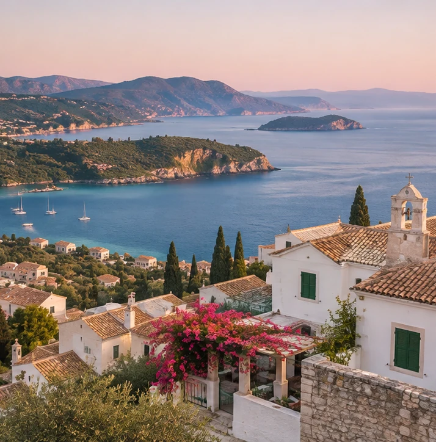

Entre o Atlântico e o Mediterrâneo
Encontre
o seu azul.
Das enseadas gregas às lagoas dos Lençóis, encontre uma paisagem que combine com a sua próxima viagem.
Explore por paisagem

Entre o Atlântico e o Mediterrâneo
Das enseadas gregas às lagoas dos Lençóis, encontre uma paisagem que combine com a sua próxima viagem.
Explore por paisagem
